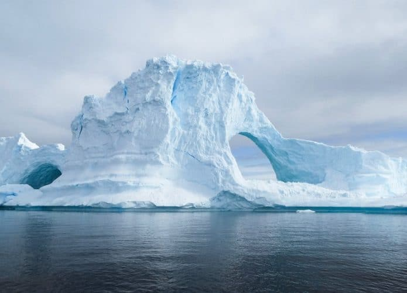

How to make ice FAST in 2022

Description
Ice is frozen water. It's a way of storing coldness, so you can later on turn something NOT COLD into COLD without putting it in the refrigerator and waiting for hours. Ain't nobody got time for that.
Ingredients
- Liquid water, at any temperature
Other equipment necessary
- A freezer
- Or a really cold environment outside. The only real requirement is temnperature below zero celsius.
- An ice mold
- But it could also be literally any recipient that fits your freezer
- The best option would be an iceberg-shaped recipient
Steps
If you're using a freezer
- Place liquid water into recipient
- Place recipient full of liquid water into freezer
- Check if freezer is turned on and set to below zero celsius
- Wait until liquid water is solid
If you're using the outside environment
- Place liquid water into recipient
- Place recipient outside
- Wait until liquid water is solid